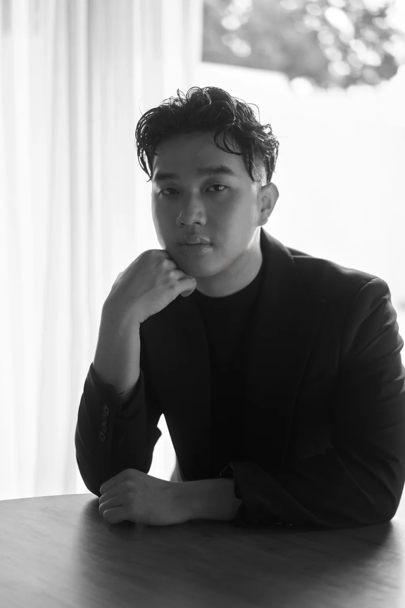

01 負責人

呂宥澍
Lu Yu-Shu嶺東科技大學視覺傳達設計學士｜品牌整合規劃師
專長品牌定位、社群動員與跨團隊整合。規劃並主持座談會、共識會議與願景論壇，設計及主持地方文化館 DMO 主題工作坊，並協助審查會議詢答。
- 團隊整合
統籌團隊分工、進度與品質
- 公眾參與
規劃座談、共識會議與願景論壇之流程與議題
- 地方品牌與 DMO
將館所特色轉為主題遊程與跨域行銷構想
- 經歷
「無憂 WUYO」品牌創辦人、1,700 人新媒體創作者社群總召